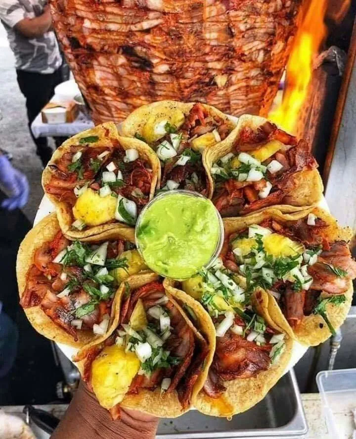

Tacos al Pastor
Sumérgete en el delicioso mundo de los tacos al pastor con nuestra receta paso a paso. Descubre cómo marinar la carne de cerdo, preparar la salsa de adobo perfecta y montar tus tacos con los ingredientes tradicionales. ¡Una explosión de sabores te espera!
Leer receta